Tech Talks / Engineer's Day 2021
Organized by Devopedia
In India, we celebrate 15th September as Engineer's Day, the day being the birthday of Sir Mokshagundam Visvesvaraya, who is more commonly known as Sir MV. This year Devopedia is celebrating Engineer's Day with a series of tech talks. All talks are free and open to public.
From 1-15 September, we've scheduled tech talks that will interest developers. Each talk will be 45-60 minutes long with another 10-15 minutes for Q&A. Please register below for an email reminder plus an invite to the sessions.
All talks will be online via Microsoft Teams. Download Microsoft Teams. Alternatively, you can join the sessions via Chrome or Microsoft Edge web browsers.
Write to webadmin@devopedia.org for any queries.
Register
Schedule
|
1 Sep, Wed @ 7pm IST
Design is the seed corn for industrial growth and economic progress of any nation. Design and innovation bring competitive advantage. This talk introduces design for engineers. Engineering design can either be original design or creative adaptation. It can be core engineering or industrial design. This talk will present a 360-degree approach to engineering design with plenty of real-world examples and thought-provoking questions. This talk will interest all engineers.
Introduction to Engineering Design |
|
|
|
3 Sep, Fri @ 7pm IST
This talk will showcase good and bad examples of Python code. The idea is to learn to write Pythonic code. This is distinct from how beginners write Python code when they're coming from other languages such as Java or C. We'll also see examples that clarify the Zen of Python. Talk requires basic knowledge of Python. Talk is suitable for beginners and intermediate Python programmers.
Python Best Practices |
| 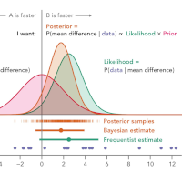 |
4 Sep, Sat @ 10am IST
Bayesian interfence is one of the essential concepts in probability. While this talk will present the formulae and related tech jargon, the focus will be to help you understand the concept via examples. This talk is suitable for students of probability, data scientists and programmers transitioning to data science.
Bayesian Inference – Explained with Examples |
| 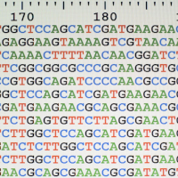 |
4 Sep, Sat @ 4pm IST
This talk will introduce participants to publicly available genomic datasets and how to process them. This is basically a knowledge-sharing session. The speaker will walk through Python code and share links to useful resources and the codebase. The talk is suitable to data scientists, programmers, those who like to work with data and anyone curious about genomic research.
An Introduction to Genomic Datasets |
| 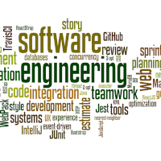 |
4 Sep, Sat @ 7pm IST
What is Software Engineering? Is it really engineering? How different is Software engineering from Mechanical or Civil Engineering? Will a comparison give us any useful insights? This talk is inspired by the classic The Unwritten Laws of Engineering by W. J. King, first published in 1944. It still continues to be in print. This talk is for everyone working in the software industry.
Is Software Engineering – Engineering? |
| 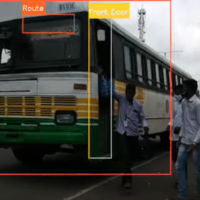 |
5 Sep, Sun @ 10am IST
This talk will address challenges common in developing countries: crowded buses, people hanging at the door, buses not stopping at designated spots, poor road conditions, and unregulated traffic in and around the bus. The talk will cover the modeling process, show OpenCV code, discuss results, and give insights into how to plan and execute an ML project. This talk is relevant to anyone interested in Machine Learning.
ML-Assisted Guidance System for the Visually Impaired |
| 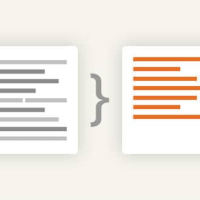 |
5 Sep, Sun @ 4pm IST
Text summarization is widely used NLP solution. Summarization is typically done in broad-based manner to cover all the topics in the text. This talk presents a research attempt that filters out not-so-relevant content. Summary of hotel reviews is focused on relevant content based on preferences. The talk will discuss the present solution, new architecture, results and further scope. This talk is relevant to anyone interested in ML and NLP. Some exposure to ML will be helpful.
Preference-Focused Text Summarization of Hotel Reviews |
|
8 Sep, Wed @ 7pm IST
Microservices are all in rage, no doubt because it has many benefits. But are there situations where adopting microservices is a bad idea? At Devopedia, our web app doesn't use microservices. We'll explain why we're not using it, when we'll think of using it and what's a possible migration path. This talk will introduce essential software design principles, monoliths, modular monoliths and more. This talk is suitable for all coders regardless of the programming language they use.
Why We're Not Using Microservices: A Devopedia Case Study |
|
| 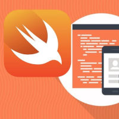 |
11 Sep, Sat @ 10am IST
Apple has recently announce native support for Reactive Programming with SwiftUI and Combine frameworks.
SwiftUI provides views, controls, and layout structures for declaring your app's user interface. The framework provides event handlers for delivering taps, gestures, and other types of input to your app, and tools to manage the flow of data from your app's models down to the views and controls that users will see and interact with.
Combine framework provides a declarative Swift API for processing values over time. These values can represent many kinds of asynchronous events. Combine declares publishers to expose values that can change over time, and subscribers to receive those values from the publishers.
In this session, we'll develop a Weather App that fetches the latest weather using a Combine Publisher. The data is rendered on UI using the SwiftUI Subscribers.
Build an iOS App in an Hour |
| 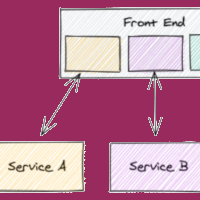 |
11 Sep, Sat @ 4pm IST
While microservices got rid of backend monoliths, frontend monoliths remained a problem. Micro Frontends architecture attempts to fix this through transformational operating models. Micro Frontends is the way we think about and build feature changes. This talk would go deeper into the design approach in which a frontend app is decomposed into individual, semi-independent "microapps" working loosely together. We'll see how this benefits and empowers developers. We'll cover principles, possible architectures, challenges, horizontal/vertical split, team structures, automation pipeline and patterns.
The Driving Forces for Micro Frontends |
| 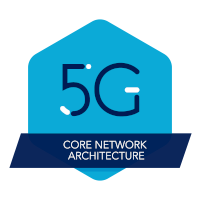 |
11 Sep, Sat @ 7pm IST
This session is designed for professionals who would like to get an overview of 5G Core Networks and implementation, understand the evolution of Core Networks from 4G to 5G, understand 5G Network Applications and their deployment on Cloud Native Architecture. This talk would interest all telecom professionals. Prior exposure to 3G or 4G would help but not essential.
Introduction to 5G Core |
| 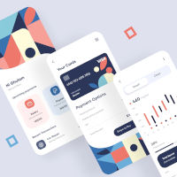 |
12 Sep, Sun @ 10am IST
A Do-It-Yourself guide for web and mobile app developers.
Learn how to design your product and its UI to suit your target audience's exact needs.
Five important and hugely effective mechanisms for successful user onboarding and retention.
Five Critical Steps to Enhance the User Experience (UX) of Your Website or App |
| 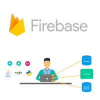 |
12 Sep, Sun @ 4pm IST
This talk will cover the essential steps to develop a complete web application. For the backend, we'll use Google's Firebase. For the frontend, we'll use HTML, CSS and JavaScript. We'll walkthrough a working codebase. We'll configure DNS for a custom domain. We'll learn what Firebase has to offer. In the process, beginners will learn to appreciate the web app development process. This talk is ideal for beginners, UI designers and frontend developers who wish to transition to fullstack development.
Step-by-step Web App Development with Firebase |
| 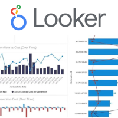 |
14 Sep, Tue @ 7pm IST
Looker is a modern data platform in Google Cloud that lets you analyze and visualize your data interactively. You can use Looker to do in-depth data analysis, integrate insights across different data sources, build actionable data-driven workflows, and create custom data applications. Looker supports LookML (Looker Modeling Language) which is a proprietary language that is used to generate abstracted SQL and provides a modeling layer. Looker’s data visualizations and dashboards give you the flexibility to drill down into your data while maintaining a secure, birds-eye of the operations. In this session, we will discuss what Looker is, how to use Looker to visualize data, understand core LookML terms and concepts, and create views and build a dashboard with appropriate data views.
An Introduction to Looker – Google's BI Platform |
|
15 Sep, Wed @ 7pm IST
Useful insights from the personal experiences of freelance techies.
Managing work schedules, keeping pace with technological change, understanding client interests, financial management and work-life balance.
How to Survive and Thrive as a Freelance Tech Professional in Today's Times |
|